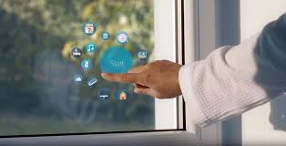

What are Smart Glass Windows?
In the Switchable Smart Glass industry, one of the questions we are asked most frequently is ‘what are Smart Windows?’, which is a broad question that has just as many answers as there are ways to ask it. Once a customer has ascertained what Smart Glass windows actually are, questions pertaining to how Smart Windows work begin to surface, however, to get any meaning out of these questions, the customer first needs to understand what a Smart Window is and how the different options involved can impact the answers. In this post, we will be looking at various types of Smart Glass Windows that Intelligent Glass offers and the differences between them in order to help you find the right product for you. For the purposes of keeping this post relevant, we will be looking at PDLC Switchable Smart Glass products and their window-based applications rather than wider definitions of ‘Smart Windows’ that may include electrochromic or photochromic glass. This post will instead focus on ‘Smart Windows’ as a term derived from Switchable Smart Glass technology. How do Smart Windows work?
Smart Windows work in the same way to most Intelligent Glass products, which function by integrating a PDLC layer into the product that covers the glass surface. Unlike our competitors, this coating covers the surface edge to edge with no gap via a proprietary manufacturing process developed exclusively by Intelligent Glass. The various ways in which the PDLC coating is bonded varies from product to product depending on the level of layer protection needed, with some products encasing it inside the glass product, such as with our Switchable Smart Glass Double Glazed Units, whereas other products are manufactured by coating the layer down directly onto the glass. This layer is then wired up to a power source, which can vary from mains power to battery power depending on the requirements, allowing the product to change its state from frosted to clear on command via an activation method of the customer’s preference. When an electrical current is sent through the film, it changes from frosted to clear instantly as the crystals in the PDLC layer polarise, allowing more light to penetrate the surface as the glass changes to transparent.
Now you see it, now you don't! Do you ever have one of those days when the Sun doesn't know whether it's coming or going, prompting you to keep opening and closing your blinds so you can read the words on your computer screen or stop your furniture from fading? It won't be long before we consign that particular problem to history, thanks to the arrival of electrochromic glass ("smart" glass), which changes from light to dark (clear to opaque) and back again, at the push of a button. It's relatively simple, wonderfully convenient (no more faded upholstery!) and has huge environmental benefits. How exactly does it work? Let's take a closer look!
What is electrochromic glass?
Glass is an amazing material and our buildings would be dark, dingy, cold, and damp without it. But it has its drawbacks too. It lets in light and heat even when you don't want it to. On a blinding summer's day, the more heat ("solar gain") that enters your building the more you'll need to use your air-conditioning—a horrible waste of energy that costs you money and harms the environment. That's why most of the windows in homes and offices are fitted with curtains or blinds. If you're into interior design and remodeling, you might think furnishings like this are neat and attractive—but in cold, practical, scientific terms they're a nuisance. Let's be honest about this: curtains and blinds are a technological kludge to make up for glass's big, built-in drawback: it's transparent (or translucent) even when you don't want it to be. Since the early 20th century, people have got used to the idea of buildings that are increasingly automated. We have electric clothes washing machines, dishwashers, vacuum cleaners and much more. So why not fit our homes with electric windows that can change from clear to dark automatically? Smart windows (also referred to by the names smart glass, switchable windows, and dynamic windows) do exactly that using a scientific idea called electrochromism, in which materials change color (or switch from transparent to opaque) when you apply an electrical voltage across them. Typically smart windows start off a blueish color and gradually (over a few minutes) turn transparent when the electric current passes through themHow does electrochromic glass work?
There are quite a few different types of electrochromic glass: some merely darken (like photochromic sunglasses, which turn darker in sunlight), some darken and become translucent, while others become mirror-like and opaque. Each type is powered by a different technology and I'm going to describe only one of them in detail here: the original technology, discovered by Dr Satyen K. Deb in 1969, and based on the movement of lithium ions in transition metal oxides (such as tungsten oxide).(Lithium, as you'll probably know, is best known as the chemical element inside rechargeable lithium-ion batteries.) Ordinary windows are made from a single vertical pane of glass and double-glazed windows have two glass panes separated by an air gap to improve heat insulation and soundproofing (to keep the heat and noise on one side or the other). More sophisticated windows (using low-e heat-reflective glass) are coated with a thin layer of metallic chemicals so they keep your home warm in winter and cool in summer. Electrochromic windows work a little bit like this, only the metal-oxide coatings they use are much more sophisticated and deposited by processes similar to those used in the manufacture of integrated circuits (silicon computer chips). Although we often talk about "electrochromic glass," a window like this can be made of either glass or plastic (technically called the "substrate," or base material) coated with multiple thin layers by a process known as sputtering (a precise way of adding thin films of one material onto another). On its inside surface (facing into your home), the window has a double-sandwich of five ultra-thin layers: a separator in the middle, two electrodes (thin electrical contacts) on either side of the separator, and then two transparent electrical contact layers on either side of the electrodes. The basic working principle involves lithium ions (positively charged lithium atoms—with missing electrons) that migrate back and forth between the two electrodes through the separator. Normally, when the window is clear, the lithium ions reside in the innermost electrode (that's on the left in the diagram you can see here), which is made of something like lithium cobalt oxide (LiCoO2). When a small voltage is applied to the electrodes, the ions migrate through the separator to the outermost electrode (the one on the right in this diagram). When they "soak" into that layer (which is made of something like polycrystalline tungsten oxide, WO3), they make it reflect light, effectively turning it opaque. They remain there all by themselves until the voltage is reversed, causing them to move back so the window turns transparent once again. No power is needed to maintain electrochromic windows in their clear or dark state—only to change them from one state to the other.Other Types of Smart Glass Technologies :
PhotochromicThermochromic
Suspended-particle
Micro-blind
Polymer-dispersed liquid crystals
Photochromic Window Tint: Similar to electrochromic glass, the transference of light through photochromic glass is affected by an outside source, only this time it’s UV radiation (generally, but it can be affected by any light of sufficient intensity). However, unlike electrochromic glass, the transparency changes when the applied light source changes. This technology is most commonly seen in optical lenses that block the sun when outdoors but remain clear otherwise.
Thermochromic Glass: As you might guess, thermochromic glass translucence changes when heat is applied. This change happens when the external temperature rises above the transition temperature and the thermochromic filter on the glass activates, transitioning the tint on the window in just minutes. This technology blocks light, heat and glare while retaining clear views through the glass.
Suspended-Particle Glass: For opacity, the nanoparticles on this type of smart glass are randomly organized to block and absorb light. When electricity is applied, the suspended particles align to allow light to pass through. The amount of light allowed to pass depends on the variance of voltage, giving full control to the user. With electrically switchable smart glass, the voltage can be controlled through photosensors, motion detectors, apps, integration with computer systems, or knobs and switches.
Micro-Blind Smart Glass: With this type of smart glass, micro blinds – thin, rolled metal blinds – on the glass can be controlled with electricity. When there is no voltage, the blinds are rolled and light can pass through. When electricity is applied, an electric field forms between the glass and the blinds that makes the blinds unroll and flatten out to block the light. This type of smart glass provides a level of privacy too and can be adjusted just like regular blinds to control light and privacy settings.
Polymer-Dispersed Liquid-Crystal Glass: Dissolved liquid crystals on the polymer or glass in this technology harden and form droplets throughout the polymer or glass sheet, as the crystals are not compatible with the other materials. These droplets scatter the light and make the glass appear milky. When electricity is applied, the liquid crystals align and allow light to pass through, similar to suspended-particle glass. This type of smart glass is typically used in bathrooms, conference rooms, and ICU areas of hospitals for privacy control.